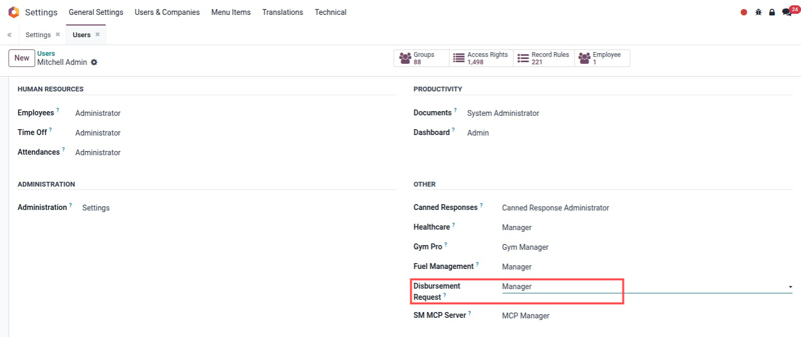
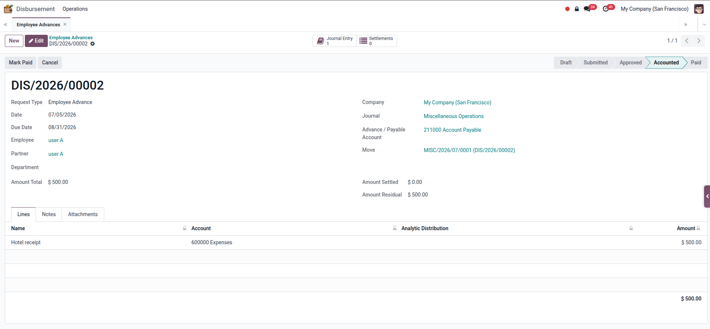
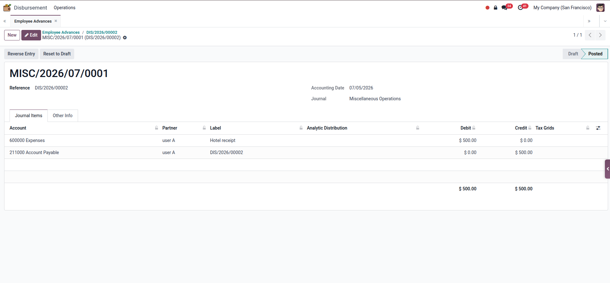
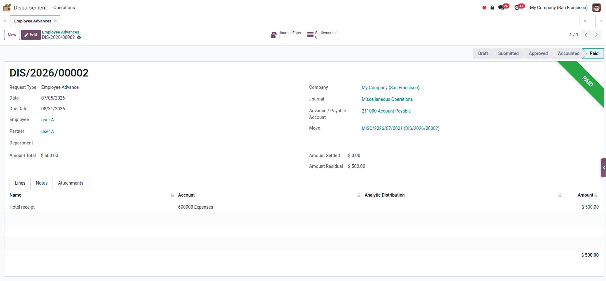
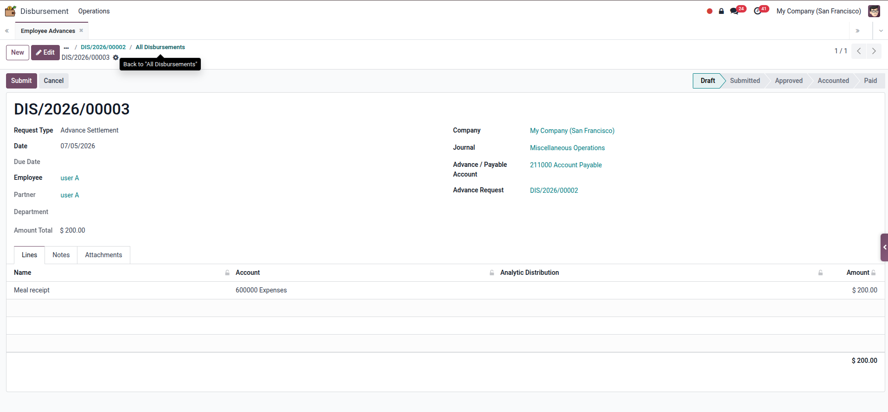
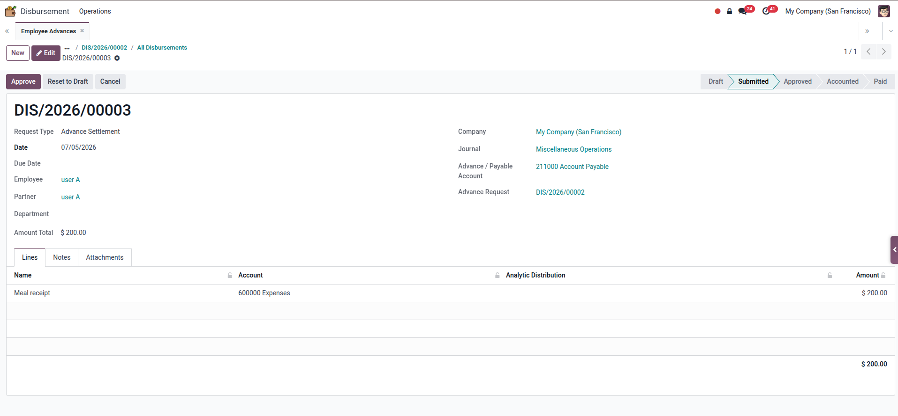
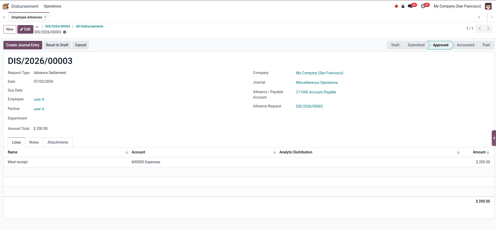
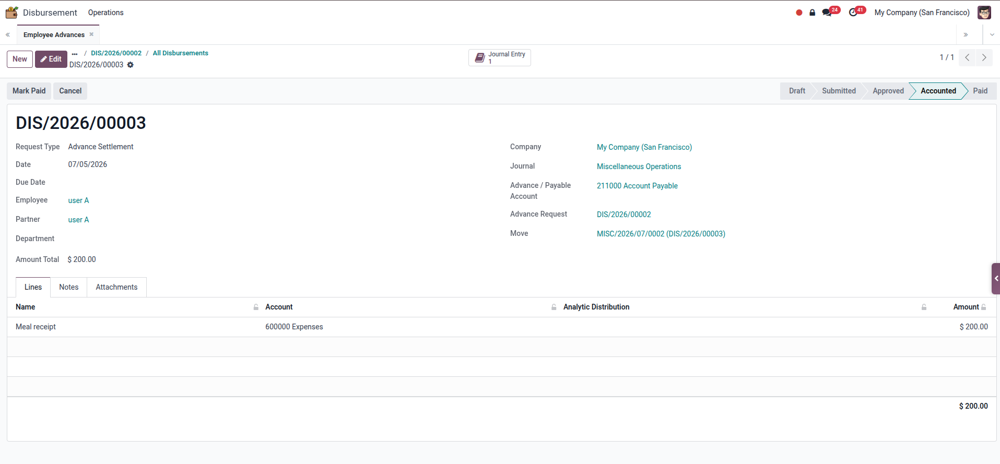
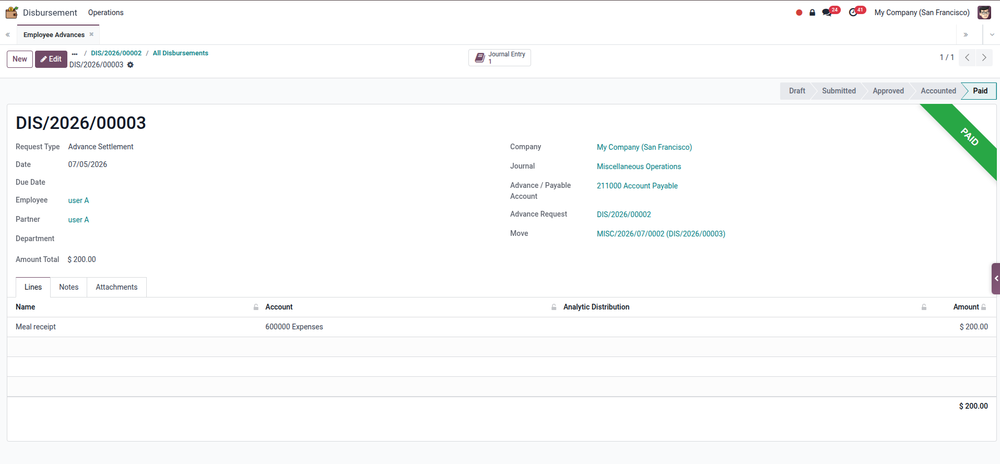
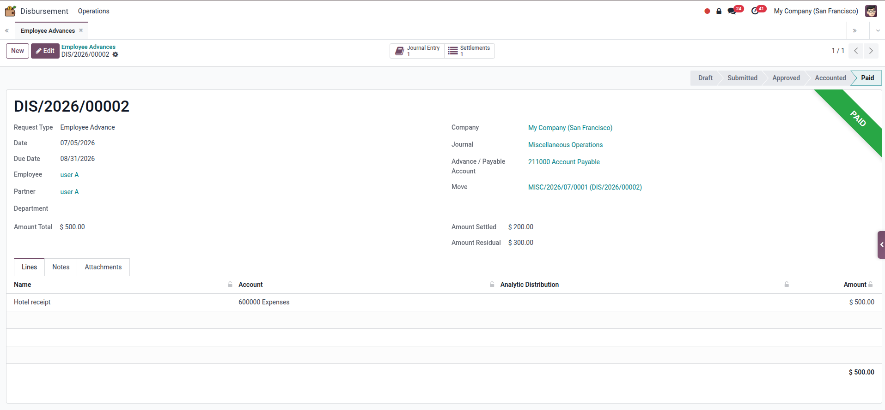

Create employee cash advance requests with line details, accounts, analytic distribution, due dates, notes, and attachments.
Record employee expense claims and route them through the same submit, approve, account, and paid process.
Link settlements to employee advances and track settled amount and residual balance automatically.
The module keeps cash advance, reimbursement, and settlement documents structured before they become accounting entries. Finance managers can approve requests, create journal entries, and mark completed requests as paid.
Move requests from Draft to Submitted, Approved, Accounted, Paid, or Cancelled with manager-controlled actions.
Approved requests can generate posted accounting entries using request lines and the selected advance or payable account.
Attach receipts or supporting documents and keep approval communication in the standard Odoo chatter.
Advance documents show total amount, settled amount, and remaining balance after linked settlements.
Disbursement lines support Odoo analytic distribution so expenses can be tracked by project, department, or cost center.
Users can prepare requests while managers control approval, cancellation, journal creation, and paid confirmation.
Employee, journal, clearing account, lines, notes, and attachments.
User sends the request to finance manager for approval.
Manager validates amount, account, analytic, and supporting documents.
Odoo creates and posts the journal entry from approved request lines.
Finance closes the disbursement when payment is completed.

User access rights include a Disbursement Request role. Set the user as Manager to allow approval, journal creation, cancellation, and paid confirmation actions.

Employee advance reaches the Accounted stage after approval and journal posting. The screen still shows Mark Paid, so finance can close the request after payment is completed.

The posted journal entry is generated from the advance request: the expense account is debited and the selected advance or payable account is credited.
The advance document displays its related journal entry and settlement counter. Before settlement is created, the settled amount is still zero and residual remains equal to the advance total.

Once the employee advance is marked as Paid, the statusbar moves to Paid and the green ribbon confirms the advance payment is complete.

A settlement starts in Draft and links back to the original advance request. The settlement line records the actual receipt or expense amount to clear.

After Submit, the settlement moves to Submitted and waits for manager approval before accounting entry creation is allowed.

Approved settlements expose the Create Journal Entry action. This keeps posting controlled by finance users after approval.

After journal posting, the settlement moves to Accounted and shows its related journal entry smart button for audit review.

Settlement can be marked as Paid after accounting is complete. The green paid ribbon gives finance a clear final state for the settlement document.

The original employee advance shows one linked settlement, a settled amount of $200.00, and a remaining residual balance of $300.00 from the original $500.00 advance.